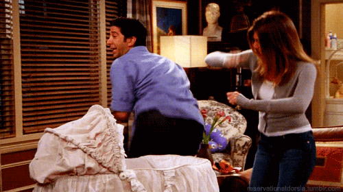
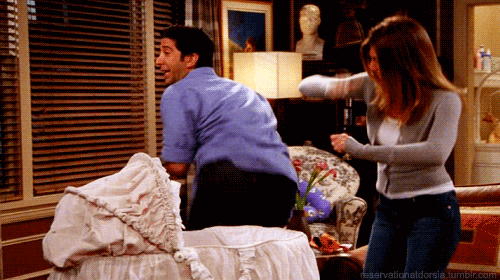

예를들면 재닛..

항상 저대사를 치면서 등장한다. 오,,,마,,,갓!!!!!!ㅋㅋㅋㅋㅋ보다보면 귀엽고 정든다.

엉덩이 춤추는 로스랑 레이첼.ㅋㅋㅋㅋ 저기에 노래부르면서 추는데 자꾸 생각난다. 아무튼 이런 자잘한 재미들이 콕콕 박혀있는 것이 프렌즈의 매력이다.
긴 시즌을 거듭하며 많은 에피소드들을 보고 무표정에서 점점 큭큭 웃고있는 내모습을 볼 수 있다.

입덕포인트은 바로 센트럴퍼크 소파다.ㅋㅋㅋㅋ장난이고 사실 뭐라 말할 수 없는 다양한 매력이 많은 드라마다.
캐릭터가 독특하고 재밌는 배우들이 6명 플러스 조연들도 엄청 많다.
예를들면 재닛..
항상 저대사를 치면서 등장한다. 오,,,마,,,갓!!!!!!ㅋㅋㅋㅋㅋ보다보면 귀엽고 정든다.

엉덩이 춤추는 로스랑 레이첼.ㅋㅋㅋㅋ 저기에 노래부르면서 추는데 자꾸 생각난다. 아무튼 이런 자잘한 재미들이 콕콕 박혀있는 것이 프렌즈의 매력이다.
긴 시즌을 거듭하며 많은 에피소드들을 보고 무표정에서
점점 큭큭 웃고있는 내모습을 볼 수 있다.